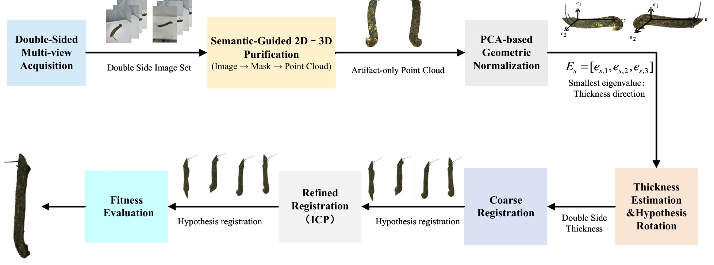
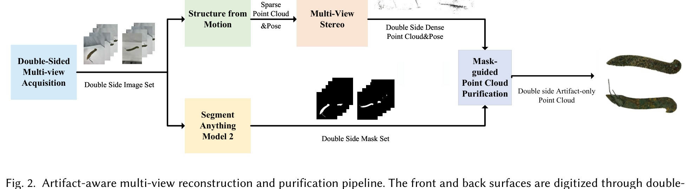

Object 6large registration result
Abstract
Non-contact three-dimensional reconstruction of thin, sheet-like heritage artifacts poses significant geometric and registration challenges. Due to their fragility, these artifacts cannot be suspended or equipped with artificial markers, necessitating independent acquisition of their front and back surfaces. Subsequent registration proves difficult due to the limited number of shared geometric features and the scarcity of explicit physical constraints, which may result in rotational ambiguity, instability, and structural collapse during iterative optimization. To address these challenges, we propose a geometry-constrained bidirectional point cloud registration method specifically tailored for thin, sheet-like heritage artifacts. The method integrates semantic-guided preprocessing, Principal Component Analysis (PCA)-based geometric normalization, and a thickness-aware registration strategy. The estimated physical thickness is incorporated as a geometric constraint to preserve structural integrity during registration. Rotational ambiguity is resolved by evaluating a finite set of global rotation hypotheses, each refined using the point-to-plane Iterative Closest Point (ICP) algorithm, with the optimal transformation selected via a geometry-aware fitness criterion consistent with the thickness scale. Experimental results demonstrate improved image-space consistency between the rendered views and the input images, as well as more accurate silhouette alignment and projection geometry. In addition, the proposed method effectively prevents degenerate configurations in which the two surfaces are incorrectly flipped while still yielding deceptively acceptable numerical scores, enabling reliable non-contact digitization of delicate and thin heritage artifacts. Code will be released upon acceptance.
Method
The method treats front- and back-side acquisition as two independent reconstruction problems before registration. It first purifies the reconstructed point clouds using image masks, then normalizes the artifact geometry with PCA, estimates the physical thickness direction, evaluates a finite set of rotation hypotheses, and finally refines the selected alignment with thickness-aware ICP.


Visual Results
The videos below show the final merged point cloud results. Each result is displayed at a larger scale for visual inspection and loops automatically when supported by the browser.
Object 3registration result
Object 5registration result
Object 7registration result
Object 8registration result